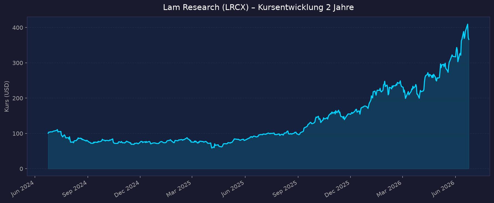
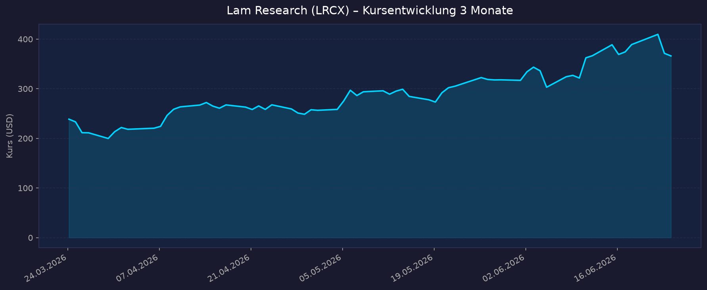

⚠️ Re-Analyse erforderlich war: Kurs seit Mai-Ranking (+$318) bereits +15 % auf $366 gestiegen — früheres Base-Ziel $314 überholt. Aktuelle Bewertung neu eingeordnet.
📈 1. Kursentwicklung
Aktueller Kurs: $366,23 | 52W-Hoch: $409,75 (22.06.2026) | 52W-Tief: $90,94 | Abstand vom Hoch: −10,6 %
Chart – 2 Jahre

Chart – 3 Monate

🔗 Lam Research auf TradingView
| Zeitraum | Kurs Start | Kurs Ende | Veränderung |
|---|---|---|---|
| 52 Wochen (Juni 2025 → Juni 2026) | ~$90,94 (52W-Tief) | $366,23 | +303 % |
| YTD 2026 (Jan. 2026 → Juni 2026) | ~$171 | $366,23 | +114 % |
| 3 Monate (März 2026 → Juni 2026) | ~$220 | $366,23 | ~+66 % |
| 52-Wochen-Hoch | — | $409,75 | — |
| 52-Wochen-Tief | — | $90,94 | — |
| Seit Mai-Ranking | $318,18 | $366,23 | +15,1 % |
⚠️ Wichtiger Kontext: +114 % YTD in nur 6 Monaten. Treiber: AI-getriebene Memory-Nachfrage (NAND 3D für HBM, DRAM), starke Q3 FY2026-Ergebnisse (+24 % YoY Revenue), Q4-Rekordguidance $6,6 Mrd. und Analystenhochstufungen. Aktuell −10,6 % vom Allzeithoch $409,75 (22.06.2026).
💹 2. KGV-Entwicklung (Kurs-Gewinn-Verhältnis)
Aktuelles KGV (GAAP TTM): 69,5x | Forward PE (FY2027E non-GAAP): ~45,7x
| Zeitraum | KGV (GAAP) | Einordnung |
|---|---|---|
| Aktuell (Juni 2026) | 69,5x | 3,5× über 10J-Ø — historisch extrem |
| vor 1 Monat (Mai 2026) | ~56x | Nach Q3-Rally-Beginn |
| Ende 2025 | ~34,9x | Moderat erhöht |
| Nov. 2025 | ~33x | Nahe Branchendurchschnitt |
| 3J-Ø | 29,4x | Referenz |
| 5J-Ø | 24,5x | Referenz |
| 10J-Ø | 19,7x | Historische Norm für WFE-Zykliker |
Bewertung: Das aktuelle KGV von 69,5x ist für einen zyklischen WFE-Ausrüster historisch extrem — 3,5× über dem 10-Jahres-Durchschnitt. Das Forward PE von ~45,7x (FY2027E) ist günstiger, aber immer noch deutlich über der historischen Norm. In WFE-Downturn-Phasen (2022–2023) kann das KGV schnell auf 15–20x komprimieren. Die aktuelle Bewertung preist einen mehrstufigen AI-Superzyklus ein.
Quellen: CompaniesMarketCap PE History · FinanceCharts
💰 3. Sales Multiple (Kurs-Umsatz-Verhältnis / P/S)
Aktuelles P/S-Verhältnis: 21,1x
| Zeitraum | P/S Ratio | Einordnung |
|---|---|---|
| Aktuell (Juni 2026) | 21,1x | Historisch sehr hoch |
| vor 12 Monaten (Juni 2025) | ~5–7x | Deutlich günstiger (vor AI-Rally) |
| vor 24 Monaten (Juni 2024) | ~5–6x | Historische Bandbreite |
| Historischer WFE-Sektor-Ø | ~5–8x | Referenz |
Trend: Stark steigend — P/S hat sich in 12 Monaten vervielfacht. Bei prognostiziertem FY2027-Revenue (annualisiert Q4-Guidance $6,6 Mrd./Q = ~$26–28 Mrd.) sinkt Forward P/S auf ~16–18x — immer noch historisch erhöht.
📊 4. Handelsvolumen (Trading Volume)
| Zeitraum | Ø Tagesvolumen | Auffälligkeiten |
|---|---|---|
| 10-Tages-Durchschnitt | 14,2 Mio. Aktien | +40 % über 3M-Schnitt |
| 3-Monats-Durchschnitt | 10,1 Mio. Aktien | Strukturell erhöht seit AI-Rally |
| 52W-Hoch-Tag (22.06.2026) | Volumenspitze | +5,27 % — Allzeithoch $409,75 |
Volumentrend: Stark erhöht gegenüber historischem Durchschnitt — institutionelles Interesse auf Mehrjahreshoch. Beta 1,868 bedeutet hohe Marktsensitivität (ca. 1,9× Marktbewegung). Erhöhtes 10-Tage-Volumen deutet auf frische Positionierungen nach dem Allzeithoch hin.
🏦 5. Insider Trades (letzte 12 Monate)
| Datum | Name | Funktion | Kauf/Verkauf | Anzahl Aktien | Wert (USD) |
|---|---|---|---|---|---|
| 12.06.2026 | 1 Director | Director | Verkauf (17 Transaktionen) | k.A. | $20.011.345 |
| Früher 2025–2026 | Verschiedene | Exec Officers | Verkauf (planmäßig 10b5-1) | k.A. | k.A. |
3-Monats-Überblick: Signifikante Direktoren-Verkäufe am 12.06.2026 — 17 Transaktionen durch einen Director für insgesamt $20 Mio. Laut Berichten waren zwei Transaktionen davon über 3× größer als typische Verkäufe dieses Insiders. Kein Insider-Kauf bekannt.
2-Jahres-Überblick: Dominiert durch Verkäufe — typisch für WFE-Ausrüster im Boom-Zyklus. Insider nutzen hohe Kurse zur Diversifikation. Keine panikartigen Massiv-Verkäufe wie bei ARM Holdings, aber auch keine Buy-Signale.
Quelle: MarketBeat Insider Trades · SEC EDGAR Form 4
🩳 6. Short-Positionen
Aktuelle Short Quote: ~2,28–2,48 % des Float (28,6–31,8 Mio. Aktien)
| Zeitraum | Short Interest | Veränderung |
|---|---|---|
| Aktuell (Juni 2026) | ~2,4 % | — |
| Peer-Gruppe Ø | 8,88 % | LRCX weit darunter |
| Trend | Niedrig und stabil | Kein Short-Druck |
Einschätzung: Niedrig — Lam Research hat die niedrigste Short Quote im WFE-Sektor (Peer-Ø: 8,88 %). Das reflektiert breiten Bullenkonsens: Die institutionelle Community glaubt an den AI-Memory-Superzyklus und wettet nicht gegen LRCX. Kein Squeeze-Risiko, aber auch kein konträres Signal für Vorsicht.
Quelle: MarketBeat Short Interest · Nasdaq Short Interest
🗞️ 7. Aktuelle Nachrichten
| Datum | Quelle | Nachricht | Relevanz |
|---|---|---|---|
| 22.06.2026 | Yahoo Finance | Kurs-Allzeithoch $409,75 — LRCX +5,27 % am stärksten Tag seit Monaten | 🔴 Hoch |
| 20.06.2026 | Yahoo Finance | +114 % YTD 2026 — Artikel analysiert weiteres AI-Infrastructure-Potenzial | 🔴 Hoch |
| 17.06.2026 | Citigroup | Street-Highst Kursziel $450 bestätigt | 🔴 Hoch |
| 11.06.2026 | Barclays | Kursziel von $275 auf $335 angehoben (Overweight) | 🔴 Hoch |
| ~Juni 2026 | Cantor Fitzgerald | Kursziel auf $425 (von $320, Overweight) — AI-Semiconductor-Demand-Argument | 🔴 Hoch |
| April 2026 | Lam Research IR | Q3 FY2026: $5,84 Mrd. Revenue (+24 % YoY, +9 % sequenziell) — Rekord | 🔴 Hoch |
| April 2026 | SEC-Meldung | Q4 FY2026 Guidance: $6,6 Mrd. ± $400 Mio. = neuer Quartalsrekord in Sicht | 🔴 Hoch |
| 2026 | US-Regierung | Neue US-Exportbeschränkungen gegenüber China: −$600 Mio. LRCX Revenue 2026, China-Anteil von 43 % auf <30 % | 🟡 Mittel |
| 2026 | Lam Research | Deferred Revenue aus China: $1 Mrd. in Aufträgen noch ausstehend | 🟡 Mittel |
Sentiment: Stark positiv bei Analysten (Citi $450, Cantor $425, Barclays $335) und Momentum-Investoren. Einzig nennenswertes Gegengewicht: US-Exportrestriktionen reduzieren China-Exposure, kurzfristig negative Revenue-Auswirkung, mittelfristig aber Reduktion des geopolitischen Risikos.
📋 8. Letzte 3 Quartalsberichte
(Lam Research Fiskaljahr endet im Juni — FY2026 = Juli 2025 – Juni 2026)
Q3 FY2026 (Januar–März 2026, berichtet 22. April 2026) — Rekordquartal
| Kennzahl | Ist | Erwartung | Abweichung |
|---|---|---|---|
| Umsatz (Revenue) | $5,841 Mrd. | ~$5,5 Mrd. | +6 % Beat |
| GAAP EPS | $1,47 | ~$1,35 | +$0,12 Beat |
| YoY-Wachstum | +24 % | — | Stärkstes Quartal seit langer Zeit |
| Seq.-Wachstum | +9 % | — | 3. Quartal in Folge sequenziell gestiegen |
Guidance Q4 FY2026: Revenue $6,6 Mrd. (±$400 Mio.) — neuer Unternehmensrekord; non-GAAP EPS $1,65 (±$0,15)
Kursreaktion: Positiv — Aktie stieg nachhaltig, erreichte am 22.06. das Allzeithoch $409,75.
Q2 FY2026 (Oktober–Dezember 2025, berichtet Januar 2026)
| Kennzahl | Ist | Erwartung | Abweichung |
|---|---|---|---|
| Umsatz (Revenue) | $5,345 Mrd. | ~$5,2 Mrd. | +2,8 % Beat |
| GAAP EPS | $1,27 | ~$1,20 | +$0,07 Beat |
| YoY-Wachstum | ~+22 % | — | Zweites starkes Quartal |
Guidance Q3 FY2026 (damals): $5,5 Mrd. — tatsächlich mit $5,84 Mrd. deutlich übertroffen.
Kursreaktion: Positiv.
Q1 FY2026 (Juli–September 2025, berichtet Oktober 2025)
| Kennzahl | Ist | Erwartung | Abweichung |
|---|---|---|---|
| Umsatz (Revenue) | $5,324 Mrd. | ~$5,1 Mrd. | +4,4 % Beat |
| GAAP EPS | $1,24 | ~$1,18 | +$0,06 Beat |
| YoY-Wachstum | ~+25 % | — | Erholung nach FY2024-Delle |
Guidance Q2 FY2026: $5,2 Mrd. — tatsächlich mit $5,345 Mrd. übertroffen.
Kursreaktion: Positiv — Beginn der Kursrally von ~$90 auf jetzt $366.
Quellen: SEC 8-K Q3 FY2026 · Motley Fool Q3 2026 Earnings Transcript · mlq.ai Earnings
🌍 9. Marktkontext & Wettbewerb
(via market-research Skill)
Markt / Branche: Wafer Fabrication Equipment (WFE) — TAM 2026: $140–149 Mrd. (Lam-Schätzung $140 Mrd., Morgan Stanley $149 Mrd.)
Lam's SAM: Mitte-30s % des WFE-Marktes (~$49–52 Mrd.) → Ziel: obere 30s % (hohe 30s %) mittelfristig
| Wettbewerber | Stärke | Schwäche |
|---|---|---|
| ASML | 100 % EUV-Monopol — keine direkte Konkurrenz zu Lam | Teuerste Maschine, Lieferkapazität begrenzt |
| Applied Materials (AMAT) | ~30 % Depositionsmarkt, breitestes Portfolio | Lam schlägt AMAT im Etch-Segment; AMAT #1 Dep, Lam #2 |
| KLA Corporation (KLAC) | Dominiert Prozesskontrolle/Inspektion — eigenes Segment | Kein direkter Etch-Konkurrent |
| Tokyo Electron (TEL) | Stark in Deposition und Diffusion, Japan-Basis | Geringere AI-Positionierung als Lam |
| Top 5 gesamt (ASML, AMAT, Lam, TEL, KLA) | 56–66 % des Semiconductor Equipment-Gesamtmarkts | Konzentrationsrisiko bei Export-Restriktionen |
Marktposition:
- #1 in Etch weltweit — kein anderes Unternehmen kommt nah heran. In 3D-NAND (High-Bandwidth Memory für AI) ist Lam's Etch-Equipment absolut kritisch: Jede weitere 3D-Schicht braucht exponentiell mehr Etch-Kapazität.
- #2 in Deposition (hinter Applied Materials) — starke Position, die Marktanteil mit 3D-Strukturen gewinnt
- SAM-Ausweitung: Lam erwartet SAM-Anteil am WFE von aktuell ~mid-30s % auf high-30s % — getrieben durch den Proliferation von 3D-Strukturen in Logik und Memory
Branchentrends 2026:
- AI-Memory-Boom (HBM + 3D-NAND): Jede neue Schicht in 3D-NAND benötigt mehr Etch-Durchläufe — Lams Kerntechnologie wird strukturell wichtiger. HBM für AI-GPUs treibt DRAM-Etch-Nachfrage.
- WFE-Markt auf Allzeithoch: $140–149 Mrd. in 2026 nach $108 Mrd. in 2025 (+30–38 % YoY). Lam wächst schneller als der Gesamtmarkt (Overperformance durch Etch-Dominanz).
- China-Geopolitik als Gegenwind: China war bis 2025 ~43 % von Lam's Revenue. Neue US-Exportrestriktionen reduzieren dies auf <30 % und kosten ~$600 Mio. in FY2026. Langfristig: Diversifikation weg von China ist positiv für geopolitisches Risikoprofil.
Risiken aus dem Marktumfeld:
- WFE-Zyklen: Branche erlebte 2023 einen Einbruch (NAND-Überkapazität); nächster Downturn-Risiko ab 2027–2028 wenn AI-Capex-Wachstum abflacht
- Geopolitik: Weitere US-Export-Verschärfungen gegenüber China möglich
- Konkurrenzdruck: Japan/Südkorea-Subventionen könnten TEL und Samsung-Equipment stärken
Quellen: Barchart WFE $149B · SNS Insider · PatentPC Market Data · Fortune Business Insights
📝 Gesamteinschätzung
Stärken:
- ✅ Weltmarktführer Etch — absolut kritisch für 3D-NAND und HBM-Produktion; keine echte Alternative
- ✅ Drei Quartale in Folge mit Revenue-Beats (+22–25 % YoY); Q4-Rekordguidance $6,6 Mrd.
- ✅ SAM-Ausweitung von mid-30s % auf high-30s % des WFE — strukturell mehr Marktanteil
- ✅ Niedriges Short Interest (~2,4 %) — breiter Bullenkonsens institutioneller Investoren
- ✅ Analystenkonsens stark bullisch: Citi $450, Cantor $425, Barclays $335 — alle über aktuellem Kurs
Risiken:
- ⚠️ Extrem hohe Bewertung: PE TTM 69,5x (3,5× historisches Ø), P/S 21x — für einen WFE-Zykliker historisch nicht nachhaltig
- ⚠️ WFE-Zyklizität: Branche hatte 2022–2023 einen schweren Einbruch (-40 % Revenue); nächster Downturn ist statistisch wahrscheinlich bis 2028
- ⚠️ China-Risiko: Exportrestriktionen kosten $600 Mio. in FY2026; weitere Verschärfungen möglich
- ⚠️ Director-Verkäufe: $20 Mio. in 17 Transaktionen am 12.06.2026 — ungewöhnlich hoch für einen einzigen Director
- ⚠️ Kursanstieg +303 % in 12 Monaten eingepreist: Bei $366 ist viel Optimismus already im Kurs
5-Jahres-Szenario-Analyse (FY2031):
Basis: FY2027E non-GAAP EPS ~$8,00 (Forward PE Basis); WFE-Markt-Zyklen eingerechnet
| Szenario | Annahme | EPS FY2031E | P/E | Kurs 2031 | vs. heute |
|---|---|---|---|---|---|
| Bär (WFE-Downturn 2028–2029, China-Verluste) | 10 % CAGR | ~$11,75 | 15x | ~$176 | −52 % |
| Base (AI-Nachfrage hält an, WFE $160–180 Mrd.) | 18 % CAGR | ~$18,00 | 22x | ~$396 | +8 % |
| Bull (AI-Superzyklus bis 2030, SAM auf high-30s %) | 25 % CAGR | ~$24,40 | 30x | ~$732 | +100 % |
⚠️ Einordnung: Zum aktuellen Kurs von $366 ist der Base-Case nur +8 % über 5 Jahre — für eine hochvolatile, zyklische Halbleiter-Ausrüster-Aktie mit Beta 1,87 ein schlechtes Chance-Risiko-Verhältnis. Das Bull-Case (+100 %) ist möglich, aber erfordert: anhaltende AI-Capex-Welle ohne Unterbrechung, keine weiteren China-Sanktionen, erfolgreiche SAM-Ausweitung auf high-30s % des WFE. Für Investoren ohne Depotposition: Attraktiver Einstiegspunkt wäre ein Rücksetzer Richtung $230–260 (ca. 30 % Rücksetzer bei historischem PE 25–30x auf FY2027E EPS $8).
Fazit: Lam Research ist operativ eines der überzeugendsten Unternehmen im Halbleiter-Equipment-Sektor — die #1-Etch-Position ist im AI-Memory-Superzyklus besonders wertvoll. Drei starke Quartale + Rekordguidance belegen, dass das Fundamentalbild stimmt. Das Problem ist die Bewertung: Nach +303 % in 12 Monaten und +114 % YTD handelt die Aktie bei PE TTM 69,5x und P/S 21x — Multiples, die bei einem WFE-Downturn (historisch alle 3–4 Jahre) schnell auf 15–20x zusammenbrechen. Der Base-Case über 5 Jahre liefert nur +8 % — unattraktiv für dieses Risikoniveau.
Datenquellen: Yahoo Finance LRCX · SEC 8-K FY2026 · Barchart WFE · MarketBeat Forecast · StockAnalysis Forecast · Fortune Business Insights · Motley Fool Q3 Transcript
Keine Anlageberatung — rein informative Auswertung öffentlicher Daten